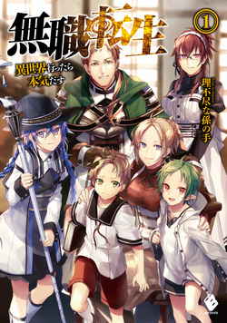

Light Novel Reviews
Mushoku Tensei by Rifujin na Magonote

A 34-year-old shut-in dies pathetically and wakes up as a baby in a magic-filled world and actually decides to do better this time. Watching Rudeus grow up, learn magic, and slowly become someone worth rooting for is oddly addicting, even when his past keeps catching up to him. One of the genre's best for a reason.
Rating:★★★★★
Read ReviewRe:Zero by Tappei Nagatsuki
Subaru gets yanked into a fantasy world and thinks he's the chosen hero until dying becomes a recurring part of his story. Every loop he survives costs him something, and watching him claw his way toward a good outcome (that he can't even talk about) is brutal in the best way. Fair warning: it gets dark fast.
Rating:★★★★★
Read Review